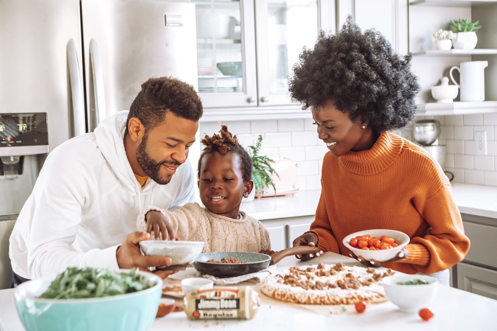
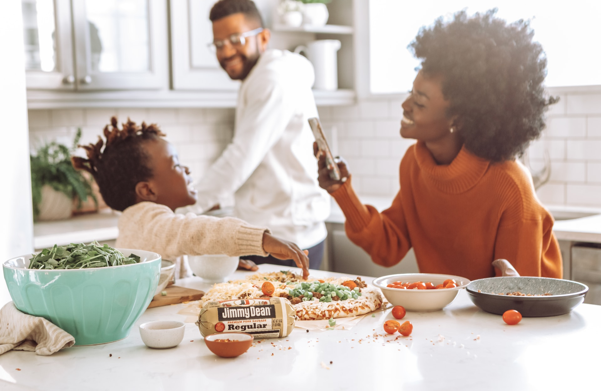

Welcome to Odin Recipes, the first project in The Odin Project's web development curriculum. This project utilizes an external API to search for cooking recipes by name, ingredients, cuisine type, dietary restrictions, and more. By utilizing an external API, Odin Recipes has access to a vast database of recipes. If you enjoyed your experience here and would like to learn more about me or see more of my work, please feel free to check out my GitHub account and LinkedIn profile. Thank you again for your interest, and I look forward to connecting with you!
What's the deal with...
Odin Recipes?
How Odin Recipes...
Works For You
01. Search Your Favorite Dishes
Use Odin Recipe's search engine to search for your favorite dishes!

02. Save Your Favorite Recipes
Utilize Odin Recipe's Library feature to store and save your favorite recipes!
03. Chef It Up
When you're ready and have all of your ingredients, the next step takes place in the kitchen!

Check out the...
Recipes of the Day

Recipe
113 Calories
12 Ingredients
Full Recipe
Recipe
113 Calories
12 Ingredients
Full Recipe
Recipe
113 Calories
12 Ingredients
Full RecipeLet's get cooking...